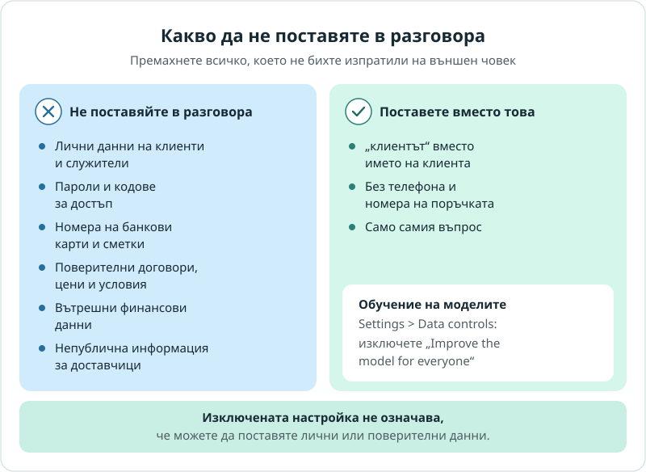

Съвети
ChatGPT на български: как да го използвате в работата
Чат GPT на български може да поеме част от писането в ежедневната работа на бизнеса: черновата на отговор до клиент, текста на оферта, публикация или резюме на дълъг документ. Пишете му на български, както бихте поставили задача на колега, и получавате отговор на същия език. Инструментът е полезен за собственици и екипи на малки бизнеси, когато всеки текст се проверява от човек, преди да бъде изпратен.
Автор: Георги ТодоровОбновено
Работи ли чат GPT на български?
Да, OpenAI, компанията, която разработва ChatGPT, посочва българския сред поддържаните езици. Можете да пишете на български и да получавате отговорите на български, а менюто на услугата също може да бъде на български.
Езикът на менюто обикновено следва езика на браузъра или телефона Ви. Ако искате да го смените ръчно, влезте в профила си, отворете настройките и изберете езика (Settings > General > Language). Тази настройка е достъпна само когато сте влезли в акаунта си.
Ако търсите изкуствен интелект на български за писане на текстове, ChatGPT е една от възможностите. Българският текст, който подготвя, може да съдържа изрази, които звучат като превод от английски. Прочетете го внимателно, преди да го използвате.
Как да започнете да използвате ChatGPT?
- Отворете chatgpt.com в браузъра или изтеглете приложението за iOS или Android. Внимавайте със сайтове и приложения с подобни имена, които не са на OpenAI.
- Създайте акаунт с имейла, който използвате за работа.
- Проверете езика на менюто и го сменете от настройките, ако е нужно.
- Прегледайте настройките за данни, описани по-долу, преди да започнете работа с текстове на бизнеса.
- Започнете с една реална задача, например отговор на запитване, което получавате често.
Можете ли да използвате ChatGPT, без да плащате?
Да, на страницата с цените OpenAI описва план Free, който не се заплаща, и платени планове за отделни потребители: Go, Plus и Pro. За фирми има отделни планове Business и Enterprise.
Планът Free има ограничения, например при качването на файлове и при създаването на изображения. Платените планове разширяват тези възможности. Цените и условията се променят, затова ги проверявайте на страницата с цените на OpenAI, преди да изберете план.
За кои задачи в бизнеса е полезен ChatGPT?
ChatGPT помага най-вече с текстове, които пишете често и по сходен начин. Вие давате фактите, а той подготвя първия вариант, който после редактирате.

- Отговори на запитвания. Поставете въпроса на клиента без личните му данни и поискайте учтив отговор. Цената, срока и името добавяте Вие.
- Чернова на оферта. Опишете услугата, за кого е и какво включва, а ChatGPT подрежда текста. Цените и условията въвеждате Вие.
- Публикации в социалните мрежи. Поискайте няколко варианта на текст за една новина и изберете най-подходящия.
- Резюме на дълъг текст. Поставете дълъг имейл, инструкция или публичен документ и поискайте основните точки.
- Превод. Преведете имейл от чужд език или на чужд език. Важните текстове дайте за проверка на човек, който владее езика.
- Редакция. Поискайте текстът да стане по-кратък, по-учтив или по-ясен и проверете правописа.
Отговорът е по-точен, когато посочите за кого е текстът, каква е целта му, колко дълъг да бъде и в какъв тон да е написан. Ако резултатът не пасва, поискайте промяна в същия разговор. В един измислен пример автосервиз може да напише: „Кратък учтив отговор до клиент, който пита дали може да остави колата си в събота, с официално обръщение и без обещан час.“
Как да проверявате отговорите?
Отговорът може да звучи уверено и въпреки това да съдържа грешка. Приемайте всеки отговор като чернова, която проверявате, преди да я използвате.
- Сравнете всяко число, дата, цена и срок с Вашите собствени данни.
- Проверявайте имена, адреси, закони и данъчни правила в официален източник, например сайта на съответната институция.
- Ако отговорът посочва източник, отворете го и вижте дали казва същото.
- Прочетете българския текст на глас и поправете изреченията, които звучат като превод.
- Уверете се, че текстът не обещава нещо, което бизнесът Ви не предлага.
Когато не сте сигурни, попитайте колега или специалист, преди текстът да стигне до клиента.
Какво да не поставяте в разговора?
Текстът, който поставяте в разговора, се изпраща към услугата и се обработва там. Преди да го поставите, премахнете от него всичко, което не бихте изпратили на външен човек.

- Лични данни на клиенти и служители: имена заедно с телефон, имейл, адрес, ЕГН или здравна информация.
- Пароли, кодове за достъп, номера на банкови карти и сметки.
- Договори, цени и условия, които сте се задължили да пазите поверителни.
- Вътрешни финансови данни и информация за доставчици, която не е публична.
Вместо името на клиента напишете „клиентът“, премахнете телефона и номера на поръчката и оставете само самия въпрос.
При плановете за отделни потребители (Free, Plus и Pro) OpenAI посочва, че може да използва съдържанието Ви за обучение на моделите си. Можете да спрете това от Settings > Data controls, като изключите опцията „Improve the model for everyone“. По подразбиране OpenAI не използва за обучение данните от плановете Business и Enterprise. Изключената настройка не означава, че можете да поставяте лични или поверителни данни.
Кога решението трябва да остане при човек?
ChatGPT помага с текста, но отговорността за това, което бизнесът Ви изпраща или обещава, остава при Вас. Следните решения взема човек от екипа.
- Цена, срок или условие, които обещавате на клиент.
- Отговор на оплакване или на недоволен клиент.
- Въпроси, свързани с договори, данъци, счетоводство и право.
- Решения за хора, например наемане на служител или отказ на клиент.
- Всеки текст, който се публикува от името на фирмата.
Разпределете работата така, че ChatGPT да подготвя черновата, служител да я проверява, а отговорният човек да одобрява важните текстове.
Какво да направите, когато едни и същи задачи се повтарят всеки ден?
ChatGPT е удобен за отделни задачи, които някой от екипа задава ръчно. Когато едни и същи въпроси идват всеки ден в Messenger, Instagram или WhatsApp, може да се използва AI асистент, обучен на информацията на Вашия бизнес. Той отговаря на клиентите денонощно и събира контакта им, когато не може да помогне. Онлайн записването, офертите от формуляр до PDF и документите могат да се поемат от автоматизации, които работят по зададени правила.
Xtra AI изгражда такива решения за малки бизнеси. Първата стъпка е безплатната диагностика, в която отбелязвате задачите, които отнемат най-много време. След нея следва 30-минутен разговор и оферта с приоритизирани решения и ясна цена за всяко от тях. Срокът зависи от решението и го посочваме в офертата.
Диагностиката не Ви обвързва с нищо и работим без дългосрочни договори.
Източници
Често задавани въпроси
Работи ли ChatGPT на български език?
Да, OpenAI посочва българския сред поддържаните езици. Можете да пишете и да получавате отговори на български, а езикът на менюто се сменя от настройките на профила.
Трябва ли да плащам, за да използвам ChatGPT?
Не е задължително. OpenAI предлага план Free, който не се заплаща и има ограничения, както и платени планове Go, Plus и Pro за отделни потребители и Business и Enterprise за фирми.
Мога ли да поставям имейли от клиенти в ChatGPT?
Поставяйте само съдържанието на въпроса, без имената, телефоните и другите лични данни на клиента. Пароли, банкови данни и поверителни договори не поставяйте изобщо.
Може ли да се доверя на отговорите?
Приемайте отговорите като чернова. Проверявайте числата, датите, имената и правните въпроси в собствените си данни или в официален източник, преди да използвате текста.
Използват ли се разговорите ми за обучение на модела?
При плановете за отделни потребители OpenAI посочва, че може да използва съдържанието за обучение, освен ако не изключите това от Settings > Data controls. Данните от плановете Business и Enterprise по подразбиране не се използват за обучение.
Колко струва решение от Xtra AI?
Цената се определя за всяко решение и зависи от това, какво ще бъде изградено. Посочваме я в офертата след безплатната диагностика и уточняваме дали се плаща веднъж или месечно. Работим без дългосрочни договори.
Свързани услуги
- AI асистентАсистент в Messenger, Instagram и WhatsApp, който отговаря на клиентите Ви денонощно с информацията на Вашия бизнес.Научете повече
- АвтоматизацииИзграждаме онлайн записване с напомняния, автоматични оферти, документи и фактури, свързани програми и табло с показатели.Научете повече
- Безплатна диагностикаОтбележете ситуациите, които познавате от своя бизнес, и вижте ориентировъчно колко часа седмично отнемат.Научете повече
Първата стъпка е безплатна
Диагностиката не Ви обвързва с нищо. Показваме Ви точно какво можем да поправим и колко ще струва.